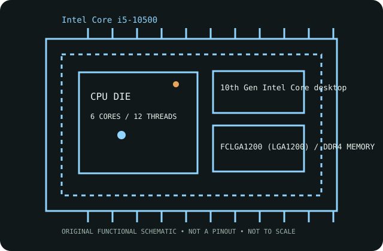

[ INTEL DESKTOP GENERATIONS // IDENTIFIED CPU ]
Intel Core i5-10500
10th Gen Intel Core desktop (Comet Lake-S), Q2 2020. 6 cores / 12 threads; 3.10 GHz base; up to 4.50 GHz max turbo; 12 MB Intel Smart Cache; 65 W TDP; FCLGA1200 (LGA1200).

MODEL IDENTIFICATION: Intel Core i5-10500; Intel ARK product SKU 199277. Match the full model suffix and board CPU-support list before purchase or installation.
Recorded specifications
| Exact model / Intel ARK SKU | Intel Core i5-10500 / 199277 |
|---|---|
| Generation / launch | 10th Gen Intel Core desktop (Comet Lake-S), Q2 2020 |
| Core / thread configuration | 6 cores; 6-core, 12-thread desktop configuration |
| Frequency | 3.10 GHz base; up to 4.50 GHz max turbo |
| Cache | 12 MB Intel Smart Cache |
| TDP / power limits | 65 W TDP |
| Package / socket | FCLGA1200 (LGA1200) |
| Memory support | Dual-channel DDR4-2666; up to 128 GB; 41.6 GB/s maximum bandwidth |
| CPU-direct PCIe | PCI Express 3.0; up to 16 CPU-direct lanes |
| Integrated graphics | Intel UHD Graphics 630 integrated |
| Platform compatibility | Use an LGA1200 motherboard whose manufacturer CPU-support list includes the exact i5-10500. Commonly paired with Intel 400-series boards; some 500-series LGA1200 boards may support it, but verify exact board revision and BIOS. Board memory type and supported capacity are fixed by that board. |
Platform compatibility and service
- Use an LGA1200 motherboard whose manufacturer CPU-support list includes the exact i5-10500. Commonly paired with Intel 400-series boards; some 500-series LGA1200 boards may support it, but verify exact board revision and BIOS. Board memory type and supported capacity are fixed by that board.
- Check the motherboard revision, BIOS minimum, memory type, cooler mounting hardware and power-delivery/cooling capability; a matching socket by itself does not guarantee support.
- Intel UHD Graphics 630 integrated. For an F-series model, provide discrete graphics if display output is required.
- Archive the complete product marking, stepping, board revision, BIOS, memory population, cooling and test conditions; distinguish published limits from measurements.
Sources & further reading
- Intel ARK specifications — Intel Core i5-10500 (SKU 199277)Official Intel specification record for this exact processor model and product number.
- Intel Product Compare — Intel Core i5-10500 (SKU 199277)Official Intel comparison entry queried by the exact Intel ARK product ID.
Confirm final board compatibility against the motherboard maker's live CPU-support list and BIOS notes.